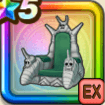

ピッコロ大魔王の玉座
攻略班 9.0点 / 凶星ばくれつきゃく大魔王のフルパワー爆裂魔光砲爆力魔波悪の大魔王恐怖に震えるがいいこれが魔族の支配だ
くわしい特徴
【レベル別習得スキル】 Lv1攻撃力+20 Lv1スキルの斬撃・体技ダメージ+10% Lv10凶星ばくれつきゃく（消費MP：36）ランダムな敵に威力100%の体技ダメージ7回与え、たまに不運【弱化】を付与する。この効果は弱化効果を受ける時の成功率が1.5倍になる Lv15大魔王のフルパワー（消費MP：20）次に与える斬撃・体技ダメージが一撃だけ2.5倍になるかわりに2ターン後に死亡する(戦闘中1回のみ使用可能) Lv20爆裂魔光砲（消費MP：45）敵全体に敵ごとに有効なイオかギラ属性の攻・魔複合245%体技ダメージを与え、まれに恐怖 Lv1～2を付与する Lv30爆力魔波（消費MP：65）敵1体に敵ごとに有効なイオかデイン属性のたまに直撃する攻・魔複合450%体技ダメージを与え、恐怖 Lv1～2を付与する Lv35悪魔系へのダメージ+5% Lv40????系へのダメージ+5% Lv50悪の大魔王（消費MP：最大MPの3%）戦闘開始時に領域「恐怖の支配」を発動する。恐怖の支配発動中は味方がスキルでダメージを与える度に確率で恐怖 Lv1を付与する Lv50恐怖に震えるがいい（消費MP：最大MPの1%）ランダムな敵1体に恐怖 Lv1～3を付与。恐怖はLv上昇時に悪い効果を確率で付与し、ターン開始時に最大HPに応じた威力のダメージを与える Lv50これが魔族の支配だ（消費MP：最大MPの3%）戦闘中自身が敵に恐怖を3回付与することに成功すると自身のHPとMPを一定量回復し、領域「恐怖の支配」を発動する 【限界突破スキル】 1凸スキルの斬撃・体技ダメージ+7% 2凸スキルの斬撃・体技ダメージ+7% 3凸スキルの斬撃・体技ダメージ+7% 4凸スキルの斬撃・体技ダメージ+7%